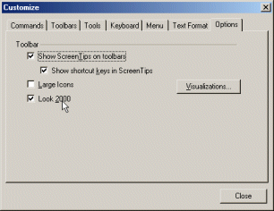

| Customizing the Look & Feel |
TeXnicCenter allows you to widely customize the look and feel of the
graphical user interface including downloadable skins.
To customize the look & feel, open the dialog
Ccustomization and select
the tab 'Options'.

The controls of the page are having the following meanings:
- 'Show ScreenTips on toolbars'
- If this option is enabled, a small yellow window (ScreenTips) with a
short description will appear, when you move the mouse cursor above a
toolbar icon and wait for a moment.
- 'Show shortcut keys in ScreenTips'
- If this option is enabled, the ScreenTips will contain the shortcut
for the specific command besides the short description of the command.
- 'Large Icon'
- If this option is enabled all toolbar icons will be displayed in
double size.
- 'Look 2000'
- If this option is enabled, controls of the user interface will be
displayed in a more modern (more flat) look. Just try it.
- 'Visualization...'
- Press this Button to change the general look & feel of the user interface.
The vizalization includes the look & feel of the toolbars, the menu bars,
etc. It is what you may know under the term "skin".
Several viszalizations are already shipped with TeXnicCenter. The
visualization dialog also provides you the possibility to download
new schemes from the internet.